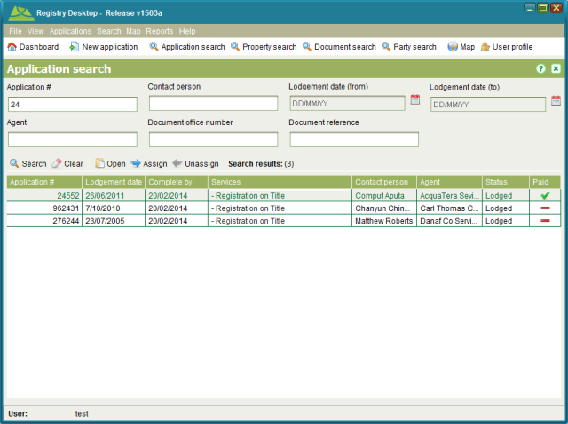

The Application Search screen allows you to find applications of interest. It can be
accessed from the Search >  Applications menu or clicking
Applications menu or clicking Application search.
Application search.

Application Search
You can search by any combination of application number, agent name, contact person name,
document reference and/or a lodging date range by entering your chosen search criteria then
clicking  Search. The application number, agent name and contact person
name also support partial and full matching so you only need to enter a partial name or
number to get search results. To view the details of an application select it from the
results table and click
Search. The application number, agent name and contact person
name also support partial and full matching so you only need to enter a partial name or
number to get search results. To view the details of an application select it from the
results table and click Open or double click the search results to open it automatically. To
clear the job search criteria press
Open or double click the search results to open it automatically. To
clear the job search criteria press  Clear.
Clear.
The Application Search can be used to locate and assign or unassign applications that are
not displayed on the Dashboard. Search for an select the application from the results table
and choose the Assign or
Assign or Unassign buttons. Note that the buttons will remain disabled unless
you have appropriate rights to complete the action and the application fee has been paid.
Unassign buttons. Note that the buttons will remain disabled unless
you have appropriate rights to complete the action and the application fee has been paid.
The search results can also be sorted by any of the columns displayed in the Search results table. Simply click a column header one or more times to switch the sort of the column values between ascending and descending.